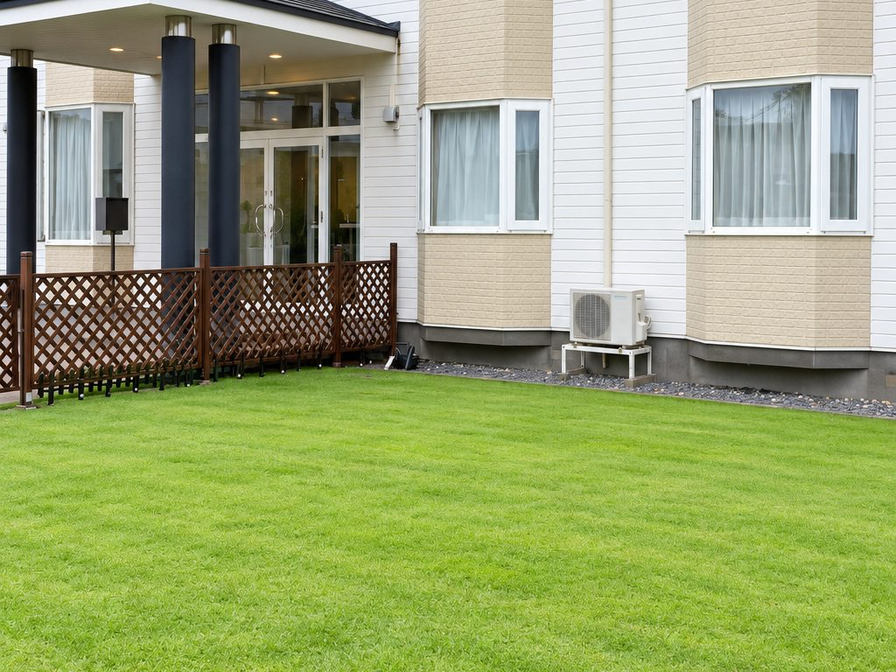
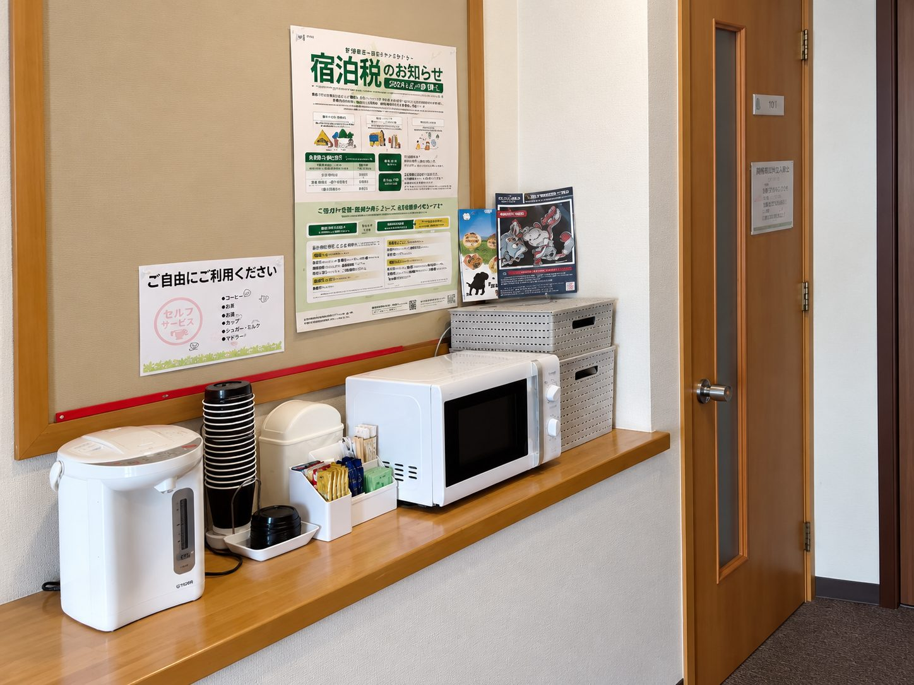
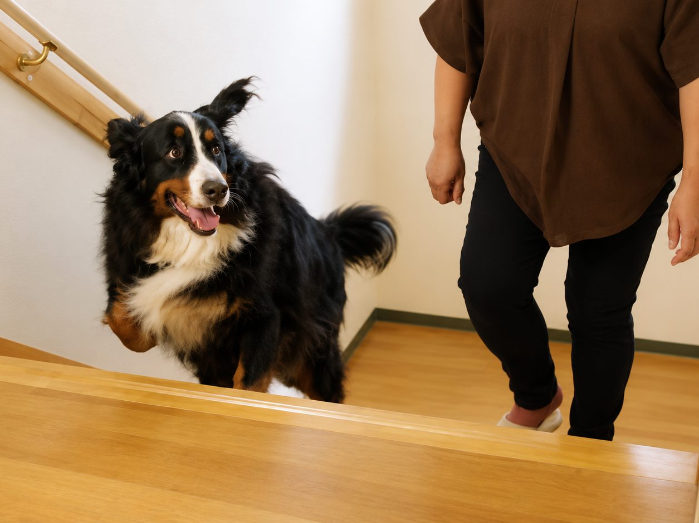
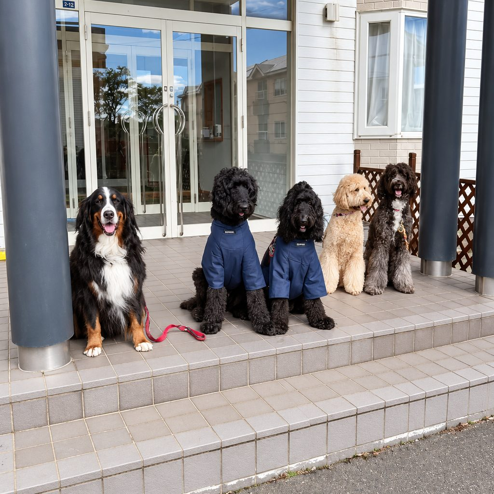
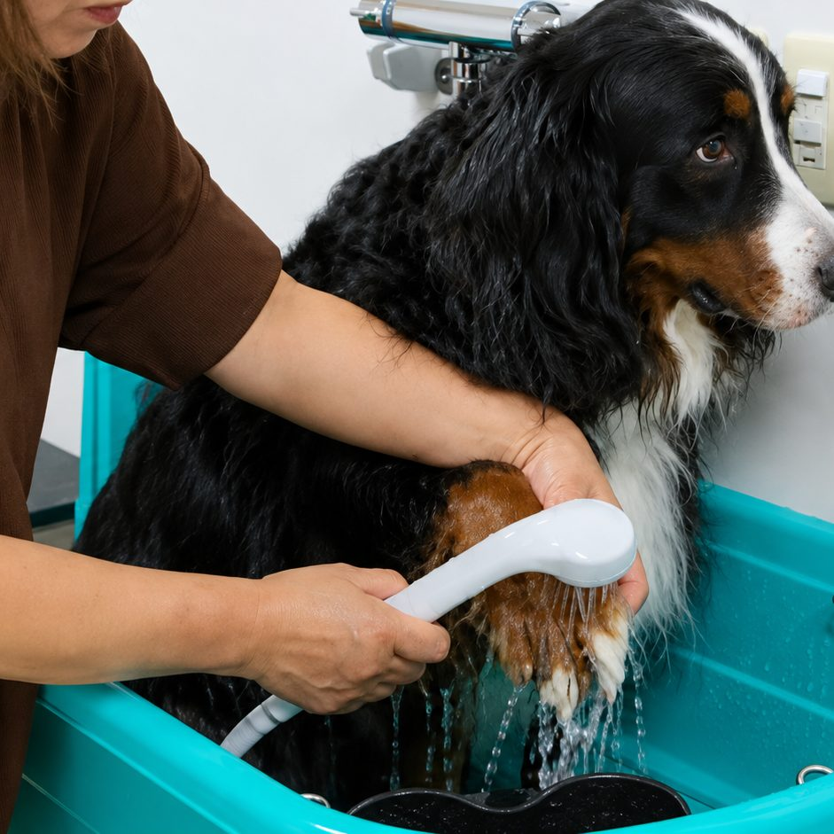
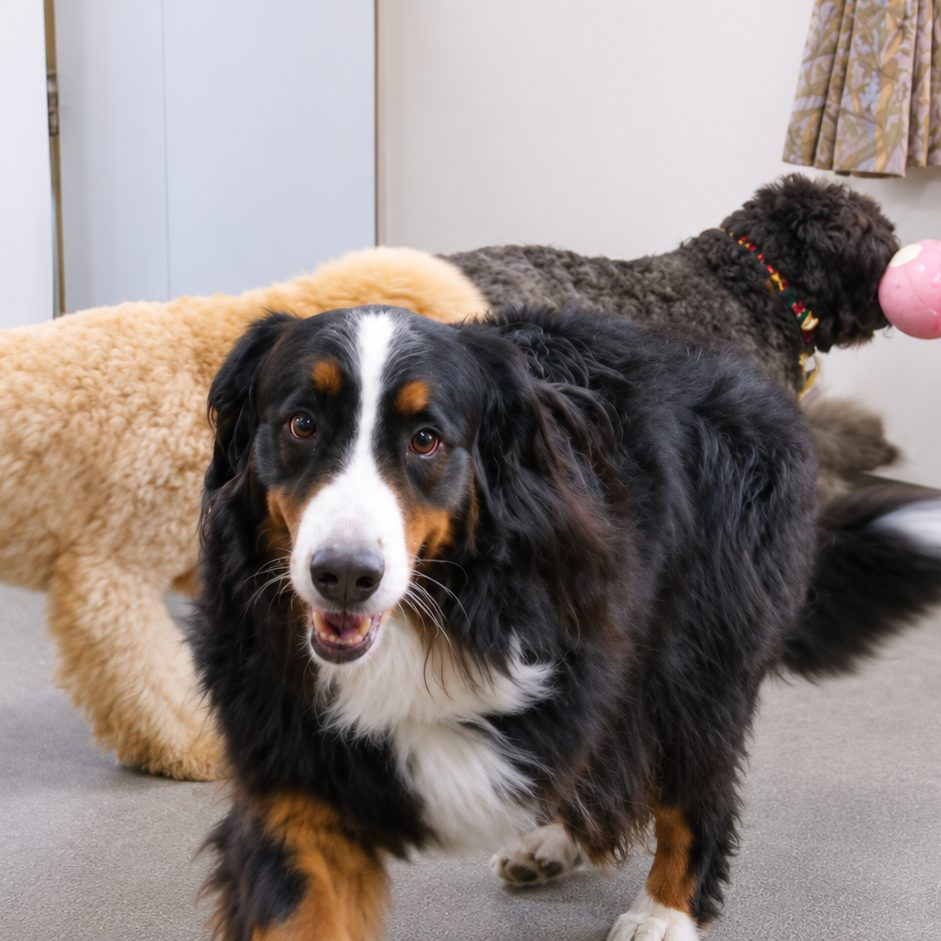
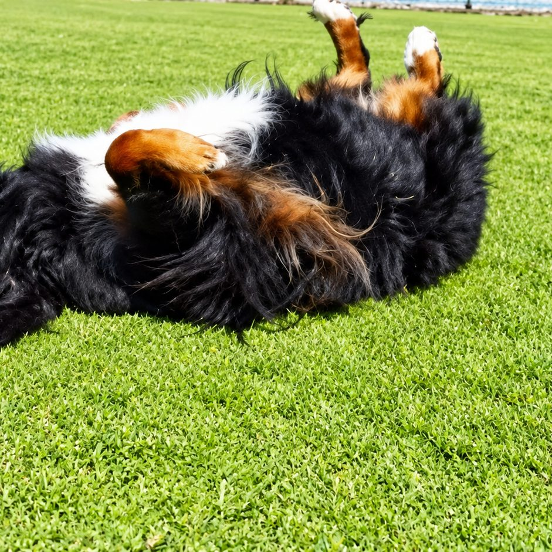
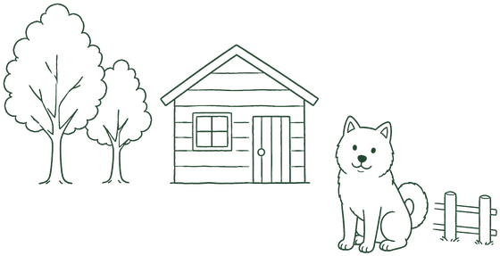

about
Dareグループについて
ひとつの場所に、愛犬との時間に必要なものを。
Dareグループは、株式会社成和が営む「ドッグランDare」「オヤツ屋さんDare」「ゲストハウス フレンドDare」の3つの事業です。思いきり走れる場所、安心して食べられるおやつ、一緒に泊まれる場所。愛犬と暮らすご家族が「困った」と感じる場面を、ひとつずつ減らしていきたいと考えています。
business
3つの事業
それぞれのページで、料金・ご利用方法・お問い合わせ先をご案内しています。

ドッグランDare

オヤツ屋さんDare

ゲストハウス フレンドDare
reason
Dareが選ばれる理由
【制作メモ・MTGで確定】以下の3点は、ヒアリング前の仮の切り口です。9/7のMTGで「他と違うところ」を伺い、実際の強みに差し替えます。
all in one
01

走る・食べる・泊まるが、ひとつの場所に
愛犬との時間に必要なものが同じ地域にそろっているため、一日の予定が立てやすくなります。
open info
02

ご利用条件を、先にすべてご案内します
料金・ご利用ルール・ワクチンの取り扱いなど、ご来場前に知っておきたいことを各ページに明記しています。
family run
03

ご家族で営む、身近な場所
ご質問やご相談には、日々現場に立つスタッフが直接お答えします。はじめての方も、どうぞお気軽にお声がけください。
instagram
Dareグループの日々
3つの事業それぞれで、ふだんの様子をお届けしています。
【制作メモ】下の4枚はレイアウト確認用のAI生成ダミー写真です。お客様の実際の投稿画像は転載していません。実際の投稿を表示する場合は、WordPress化のときにInstagramフィード連携（プラグイン等）を入れて自動表示にします。フォロワー数・投稿数は変動するため掲載していません。
わんちゃんの様子、新しいおやつ、お部屋のこと。
日々の出来事はInstagramで発信しています。




access
アクセス
ドッグラン・オヤツ屋さんと、ゲストハウスは場所が異なります。
【制作メモ・MTGで確認】郵便番号・最寄り駅からの所要時間・駐車場の有無は未確認のため仮置きです（黄色マーカーの箇所）。

access 01ドッグランDare／オヤツ屋さんDare
〒059-1305（地図の情報から。MTGで確認）
北海道苫小牧市沼ノ端中央1丁目2-24
最寄り駅からの所要時間（未確認）
駐車場：有無・台数（未確認）
access 02
ゲストハウス フレンドDare
〒059-1305（地図の情報から。MTGで確認）
北海道苫小牧市沼ノ端中央6丁目3-12
最寄り駅からの所要時間（未確認）
駐車場：有無・台数（未確認）
blog
ブログ
【制作メモ】下の記事はすべてレイアウト確認用のサンプルです（実際の告知・お知らせではありません）。読み心地を見ていただくため、記事ページも3本だけ中身を書いています。日付は入れずに「0000.00.00」の仮置きにしてあります。WordPress化のあとは、投稿された記事が新しい順に自動で並びます。カテゴリ分け（ドッグラン／オヤツ屋さん／ゲストハウス／お知らせ）の要否と、更新される方をMTGで確認します。
- 0000.00.00 ドッグラン サンプル：雨の日のドッグランは、どうしていますか
- 0000.00.00 オヤツ屋さん サンプル：はじめてのおやつ、どれを選べばいい？
- 0000.00.00 ゲストハウス サンプル：愛犬と泊まるときの持ち物リスト